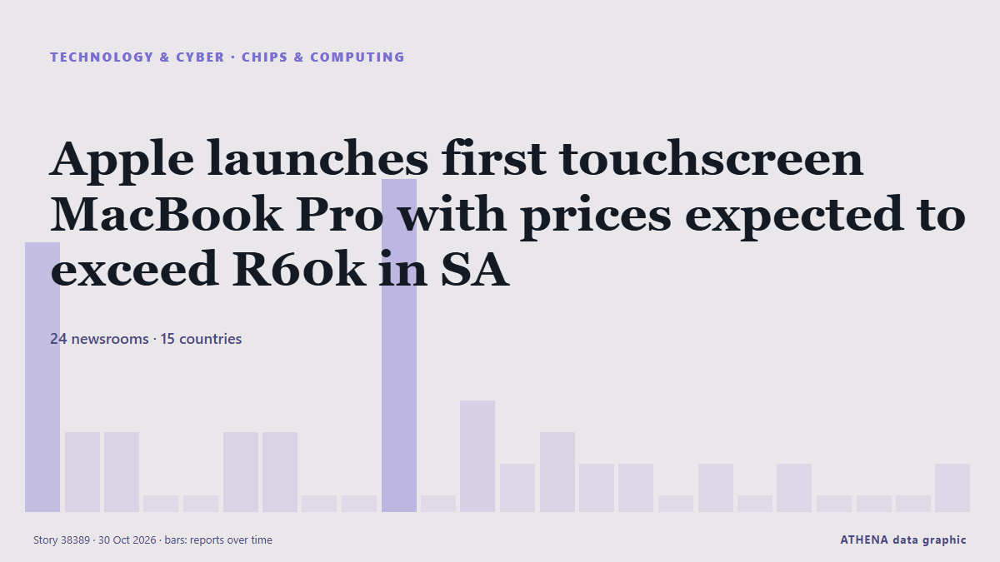

Apple launches first touchscreen MacBook Pro with prices expected to exceed R60k in SA

Apple has officially launched its long-awaited touchscreen MacBook Pro lineup featuring M5 Pro and M5 Max chips, an Ultra Retina XDR display, and up to 24 hours of battery life. από IOL
Αναφέρθηκε ανεξάρτητα από 24 μέσα σε 15 χώρες από τις 27 Οκτ, πρώτο από το Bristol Post· η κάλυψη εξασθενεί. Το ATHENA δεν βρίσκει ενδείξεις κινδύνου στην κάλυψη. Η βεβαιότητα είναι 87% (υψηλή), καθώς το επιβεβαιώνουν 24 ανεξάρτητα μέσα με μέση αξιοπιστία πηγών 73%.
Γιατί έχει σημασία: Οι εξελίξεις στην τεχνολογία και την κυβερνοασφάλεια διαμορφώνουν την ασφάλεια, τον ανταγωνισμό και τους κανόνες της ψηφιακής ζωής.
Τι άλλαξε: 3 νέες αναφορές από 3 μέσα στο 24ωρο έως 30 Οκτ.
Πρώτη διατύπωση: Apple launches its new touchscreen MacBook Pro
Οι τίτλοι των ειδήσεων παρουσιάζονται στα αγγλικά, όπως δημοσιεύτηκαν.
Με μια ματιά
Επιλέγεται, βαθμολογείται και γράφεται από τη δημοσιευμένη μεθοδολογία του ATHENA. Κανένας συντάκτης δεν παρεμβαίνει σε μεμονωμένα γεγονότα. Πώς παράγεται ›
| 27 Oct 13:19 UTC | 8 |
|---|---|
| 27 Oct 16:19 UTC | 2 |
| 27 Oct 19:19 UTC | 2 |
| 27 Oct 22:19 UTC | 0 |
| 28 Oct 01:19 UTC | 0 |
| 28 Oct 04:19 UTC | 2 |
| 28 Oct 07:19 UTC | 2 |
| 28 Oct 10:19 UTC | 0 |
| 28 Oct 13:19 UTC | 0 |
| 28 Oct 16:19 UTC | 10 |
| 28 Oct 19:19 UTC | 0 |
| 28 Oct 22:19 UTC | 3 |
| 29 Oct 01:19 UTC | 1 |
| 29 Oct 04:19 UTC | 2 |
| 29 Oct 07:19 UTC | 1 |
| 29 Oct 10:19 UTC | 1 |
| 29 Oct 13:19 UTC | 0 |
| 29 Oct 16:19 UTC | 1 |
| 29 Oct 19:19 UTC | 0 |
| 29 Oct 22:19 UTC | 1 |
| 30 Oct 01:19 UTC | 0 |
| 30 Oct 04:19 UTC | 0 |
| 30 Oct 07:19 UTC | 0 |
| 30 Oct 10:19 UTC | 1 |
Γιατί αυτοί οι αριθμοί
Σημασία
Κίνδυνος
Βεβαιότητα
Η κάλυψη — ποιος το ανέφερε και πότε
ο τίτλος όπως δημοσιεύτηκε · ανοίγει το πρωτότυπο- Bristol Post · Ηνωμένο Βασίλειο · United KingdomApple MacBook cut below £150 in rare pre-Black Friday offer with just one catch
- CNA (Channel NewsAsia) · Σιγκαπούρη · SingaporeApple launches M6 MacBook Pro and iMac, pitches faster on-device AI
- Business Recorder · Πακιστάν · PakistanApple launches M6 MacBook Pro and iMac, pitches faster on-device AI
- The Next Web · Κάτω Χώρες · NetherlandsApple puts its M6 chip in a new iMac and entry-level MacBook Pro
- The Straits Times · Σιγκαπούρη · SingaporeApple launches M6 iMac, entry-level MacBook Pro ahead of touchscreen laptop
- TechCrunch · Ηνωμένες Πολιτείες · United StatesApple unveils new 14-inch MacBook Pro with M6 chip
- The Next Web · Κάτω Χώρες · NetherlandsApple launches 14-inch MacBook Pro with M6 and 24-hour battery
- Indian Express · Ινδία · IndiaApple launches new M6 MacBook Pro, iMac; adds AI features to Creator Studio
- The National · Ηνωμένα Αραβικά Εμιράτα · United Arab EmiratesApple unveils M6-powered MacBook Pro and iMac without raising prices
- Arabian Business · Ηνωμένα Αραβικά Εμιράτα · United Arab EmiratesApple launches M6 MacBook Pro in UAE starting from $2,314
- APA (English) · Αζερμπαϊτζάν · AzerbaijanApple announces new 14-inch MacBook Pro with M6 chip
- TASS (English) · Ρωσία · RussiaApple unveils MacBook Pro with up to 24 hours of battery life
- IOL · Νότια Αφρική · South AfricaApple debuts M6 14-inch MacBook Pro and updated M6 iMac ... But it won't come cheap in South Africa
- Korea Herald · Νότια Κορέα · South KoreaWhy Samsung Display was Apple's only pick for the OLED touchscreen MacBook Pro
- Gulf News · Ηνωμένα Αραβικά Εμιράτα · United Arab EmiratesApple launches M6 MacBook Pro and iMac: UAE prices, specs, availability
- The Daily Star — page reader · Μπανγκλαντές · BangladeshApple launches new MacBook Pro and iMac with M6 chip
- Tom's Hardware · Ηνωμένες Πολιτείες · United StatesApple launches new MacBook Pro with touchscreen and OLED — starts at $2,899
- TechCrunch · Ηνωμένες Πολιτείες · United StatesApple launches its new touchscreen MacBook Pro
- The Next Web · Κάτω Χώρες · NetherlandsApple launches its first touchscreen MacBook Pro, from $2,899
- The National · Ηνωμένα Αραβικά Εμιράτα · United Arab EmiratesApple introduces touchscreen MacBook Pro with PROLED XDR display
- The National · Ηνωμένα Αραβικά Εμιράτα · United Arab EmiratesApple unveils its first touchscreen MacBook Pro laptop
- Wired · Ηνωμένες Πολιτείες · United StatesThe New M6 MacBook Pro Has a Serious Price Problem
- ZDNet · Ηνωμένες Πολιτείες · United StatesApple’s new touchscreen MacBook Pros may be late, but they have one big advantage
- Indian Express · Ινδία · IndiaApple brings touch to MacBook Pro for the first time, adds PROLED XDR display and Dynamic Island
- Gulf News · Ηνωμένα Αραβικά Εμιράτα · United Arab EmiratesApple MacBook Pro with PROLED XDR gets touchscreen for first time: price in UAE, release date
- TechCrunch · Ηνωμένες Πολιτείες · United StatesApple’s touchscreen MacBook Pro pushes laptop pricing to a new extreme
- Wired · Ηνωμένες Πολιτείες · United StatesThe 2,000-Nit OLED in Apple’s New MacBook Is a Big Deal
- Daily Tribune · Φιλιππίνες · PhilippinesApple unveils first touchscreen MacBook Pro
- DigiTimes Asia · Ταϊβάν · TaiwanApple ends its touchscreen holdout with OLED MacBook Pro, with Samsung Display reported as sole panel supplier
- IOL · Νότια Αφρική · South AfricaApple launches first touchscreen MacBook Pro with prices expected to exceed R60k in SA
- Gulf News · Ηνωμένα Αραβικά Εμιράτα · United Arab EmiratesHow good is the new touchscreen MacBook Pro? Early reviews and UAE prices
- Evening Standard (London) · Ηνωμένο Βασίλειο · United KingdomMy first impressions of Apple's first-ever touchscreen MacBook Pro – and how to pre-order
- Times of India · Ινδία · IndiaWhy Apple took 16 years to make a touchscreen MacBook
- The Next Web · Κάτω Χώρες · NetherlandsApple’s touchscreen MacBook Pro keeps macOS familiar, Bloomberg finds
- CGTN (World) · Κίνα · ChinaTouchscreens arrive for Apple’s MacBook Pro
- IOL · Νότια Αφρική · South AfricaApple’s new touchscreen MacBook Pros: Don't expect to pay less than R60k